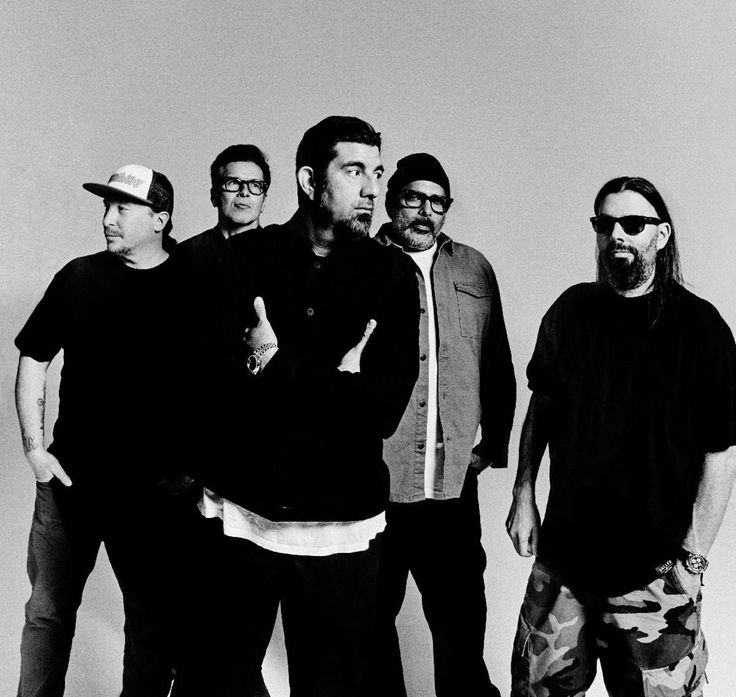
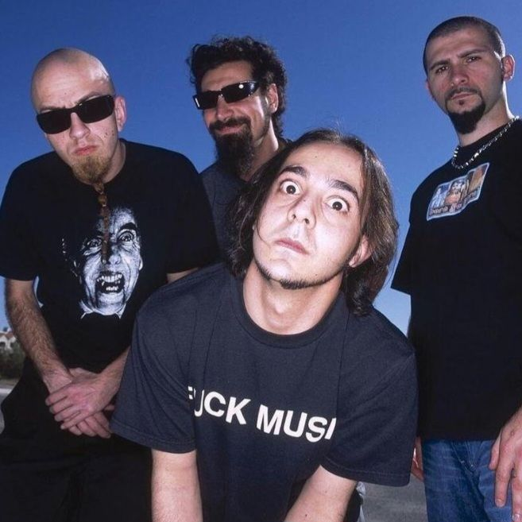
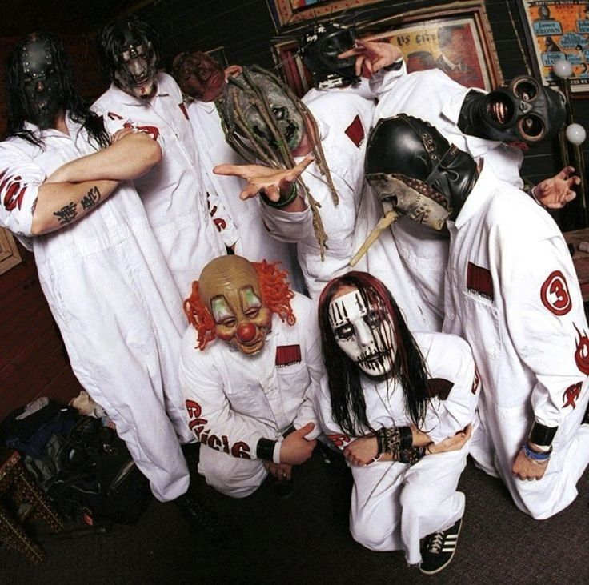

Deftones is a band known for blending heavy riffs with atmospheric and emotional sounds, combining soft and aggressive vocals. Their unique, melancholic style helped shape alternative metal and influenced an entire generation of artists.

System of a Down is an American band known for blending heavy metal with elements of punk, alternative, and Middle Eastern music. With powerful vocals by Serj Tankian and politically charged lyrics, the band stands out for its intense sound, unique style, and strong social and political messages.

Slipknot is an American band known for its aggressive sound, chaotic energy, and iconic masked image. Blending elements of nu metal and extreme metal, the group stands out for its heavy riffs, intense vocals by Corey Taylor, and explosive live performances, becoming one of the most influential bands in modern metal.